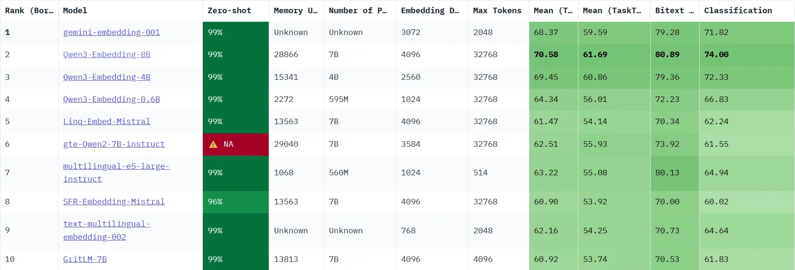
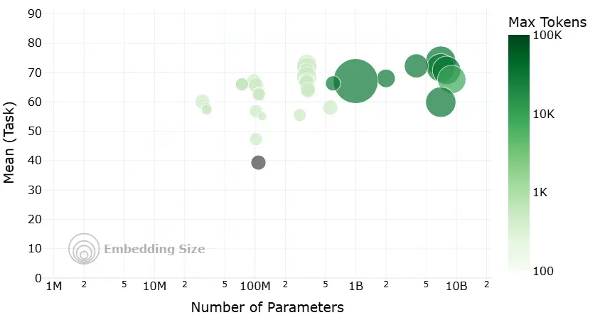

第一节 向量嵌入¶
一、向量嵌入基础¶
1.1 基础概念¶
1.1.1 什么是 Embedding¶
向量嵌入（Embedding）是一种将真实世界中复杂、高维的数据对象（如文本、图像、音频、视频等）转换为数学上易于处理的、低维、稠密的连续数值向量的技术。
想象一下，我们将每一个词、每一段话、每一张图片都放在一个巨大的多维空间里，并给它一个独一无二的坐标。这个坐标就是一个向量，它“嵌入”了原始数据的所有关键信息。这个过程，就是 Embedding。
- 数据对象：任何信息，如文本“你好世界”，或一张猫的图片。
- Embedding 模型：一个深度学习模型，负责接收数据对象并进行转换。
- 输出向量：一个固定长度的一维数组，例如
[0.16, 0.29, -0.88, ...]。这个向量的维度（长度）通常在几百到几千之间。

1.1.2 向量空间的语义表示¶
Embedding 的真正意义在于，它产生的向量不是随机数值的堆砌，而是对数据语义的数学编码。
- 核心原则：在 Embedding 构建的向量空间中，语义上相似的对象，其对应的向量在空间中的距离会更近；而语义上不相关的对象，它们的向量距离会更远。
- 关键度量：我们通常使用以下数学方法来衡量向量间的“距离”或“相似度”：
- 余弦相似度 (Cosine Similarity) ：计算两个向量夹角的余弦值。值越接近 1，代表方向越一致，语义越相似。这是最常用的度量方式。
- 点积 (Dot Product) ：计算两个向量的乘积和。在向量归一化后，点积等价于余弦相似度。
- 欧氏距离 (Euclidean Distance) ：计算两个向量在空间中的直线距离。距离越小，语义越相似。
1.2 Embedding 在 RAG 中的作用¶
在RAG流程中，Embedding 扮演着无可替代的重要角色。
1.2.1 语义检索的基础¶
RAG 的“检索”环节通常以基于 Embedding 的语义搜索为核心。通用流程如下： （1）离线索引构建：将知识库内文档切分后，使用 Embedding 模型将每个文档块（Chunk）转换为向量，存入专门的向量数据库中。
（2）在线查询检索：当用户提出问题时，使用同一个 Embedding 模型将用户的问题也转换为一个向量。
（3）相似度计算：在向量数据库中，计算“问题向量”与所有“文档块向量”的相似度。
（4）召回上下文：选取相似度最高的 Top-K 个文档块，作为补充的上下文信息，与原始问题一同送给大语言模型（LLM）生成最终答案。
1.2.2 决定检索质量的关键¶
Embedding 的质量直接决定了 RAG 检索召回内容的准确性与相关性。一个优秀的 Embedding 模型能够精准捕捉问题和文档之间的深层语义联系，即使用户的提问和原文的表述不完全一致。反之，一个劣质的 Embedding 模型可能会因为无法理解语义而召回不相关或错误的信息，从而“污染”提供给 LLM 的上下文，导致最终生成的答案质量低下。
二、Embedding 技术发展¶
Embedding 技术的发展与自然语言处理（NLP）的进步紧密相连，尤其是在 RAG 框架出现后，对嵌入技术提出了新的要求。其演进路径大致可分为以下几个关键阶段。
2.1 静态词嵌入：上下文无关的表示¶
- 代表模型：Word2Vec (2013), GloVe (2014)
- 主要原理：为词汇表中的每个单词生成一个固定的、与上下文无关的向量。例如，
Word2Vec通过 Skip-gram 和 CBOW 架构，利用局部上下文窗口学习词向量，并验证了向量运算的语义能力（如国王 - 男人 + 女人 ≈ 王后）。GloVe则融合了全局词-词共现矩阵的统计信息。 - 局限性：无法处理一词多义问题。在“苹果公司发布了新手机”和“我吃了一个苹果”中，“苹果”的词向量是完全相同的，这限制了其在复杂语境下的语义表达能力。
2.2 动态上下文嵌入¶
2017年，Transformer 架构的诞生带来了自注意力机制（Self-Attention），它允许模型在生成一个词的向量时，动态地考虑句子中所有其他词的影响。基于此，2018年 BERT 模型利用 Transformer 的编码器，通过掩码语言模型（MLM）等自监督任务进行预训练，生成了深度上下文相关的嵌入。同一个词在不同语境中会生成不同的向量，这有效解决了静态嵌入的一词多义难题。
2.3 RAG 对嵌入技术的新要求¶
在开篇我们就提到了 RAG 框架的提出[^1]，是为了解决大型语言模型 知识固化（内部知识难以更新）和 幻觉（生成的内容可能不符合事实且无法溯源）的问题。它通过“检索-生成”范式，动态地为 LLM 注入外部知识。这一过程的核心是 语义检索，很大程度上依赖于高质量的向量嵌入。
后续 RAG 的兴起对嵌入技术提出了更高、更具体的要求：
- 领域自适应能力：通用的嵌入模型在专业领域（如法律、医疗）往往表现不佳，这就要求嵌入模型具备领域自适应的能力，能够通过微调或使用指令（如 INSTRUCTOR 模型）来适应特定领域的术语和语义。
- 多粒度与多模态支持：RAG 系统需要处理的不仅仅是短句，还可能包括长文档、代码，甚至是图像和表格。这就要求嵌入模型能够处理不同长度和类型的输入数据。
- 检索效率与混合检索：嵌入向量的维度和模型大小直接影响存储成本和检索速度。同时，为了结合语义相似性（密集检索）和关键词匹配（稀疏检索）的优点，支持混合检索的嵌入模型（如 BGE-M3）应运而生，在某些任务中成为提升召回率的关键。
三、嵌入模型训练原理¶
了解了嵌入模型的发展，我们来简单探究一下当前主流的嵌入模型（通常是基于 BERT 的变体）是如何通过训练获得强大的语义理解能力的。
现代嵌入模型的核心通常是 Transformer 的编码器（Encoder）部分，BERT 就是其中的典型代表。它通过堆叠多个 Transformer Encoder 层来构建一个深度的双向表示学习网络。
3.1 主要训练任务¶
BERT 的成功很大程度上归功于 自监督学习 策略，它允许模型从海量的、无标注的文本数据中学习知识。
任务一：掩码语言模型 (Masked Language Model, MLM)¶
- 过程：
- 随机地将输入句子中 15% 的词元（Token）替换为一个特殊的
[MASK]标记。 - 让模型去预测这些被遮盖住的原始词元是什么。
- 随机地将输入句子中 15% 的词元（Token）替换为一个特殊的
- 目标：通过这个任务，模型被迫学习每个词元与其上下文之间的关系，从而掌握深层次的语境语义。
任务二：下一句预测 (Next Sentence Prediction, NSP)¶
- 过程：
- 构造训练样本，每个样本包含两个句子 A 和 B。
- 其中 50% 的样本，B 是 A 的真实下一句（IsNext）；另外 50% 的样本，B 是从语料库中随机抽取的句子（NotNext）。
- 让模型判断 B 是否是 A 的下一句。
- 目标：这个任务让模型学习句子与句子之间的逻辑关系、连贯性和主题相关性。
- 重要说明：后续的研究（如 RoBERTa）发现[^2]，NSP 任务可能过于简单，甚至会损害模型性能。因此，许多现代的预训练模型（如 RoBERTa、SBERT）在预训练阶段移除了 NSP。
更多细节可查看 BERT 架构及应用
3.2 效果增强策略¶
虽然 MLM 和 NSP 赋予了模型强大的基础语义理解能力，但为了在检索任务中表现更佳，现代嵌入模型通常会引入更具针对性的训练策略。
-
度量学习 (Metric Learning) ：
- 思想：直接以“相似度”作为优化目标。
- 方法：收集大量相关的文本对（例如，（问题，答案）、（新闻标题，正文））。训练的目标是优化向量空间中的相对距离：让“正例对”的向量表示在空间中被“拉近”，而“负例对”的向量表示被“推远”。关键在于优化排序关系，而非追求绝对的相似度值（如 1 或 0），因为过度追求极端值可能导致模型过拟合。
-
对比学习 (Contrastive Learning) ：
- 思想：在向量空间中，将相似的样本“拉近”，将不相似的样本“推远”。
- 方法：构建一个三元组（Anchor, Positive, Negative）。其中，Anchor 和 Positive 是相关的（例如，同一个问题的两种不同问法），Anchor 和 Negative 是不相关的。训练的目标是让
distance(Anchor, Positive)尽可能小，同时让distance(Anchor, Negative)尽可能大。
四、嵌入模型选型指南¶
理论已经了解，那么该如何选择最适合你项目的嵌入模型？
4.1 从 MTEB 排行榜开始¶
MTEB (Massive Text Embedding Benchmark) 是一个由 Hugging Face 维护的、全面的文本嵌入模型评测基准。它涵盖了分类、聚类、检索、排序等多种任务，并提供了公开的排行榜，为评估和选择嵌入模型提供了重要的参考依据。

下面这张图是网站中的模型评估图像，直观地展示了在选择开源嵌入模型时需要权衡的四个核心维度：
- 横轴 - 模型参数量 (Number of Parameters) ：代表了模型的大小。通常，参数量越大的模型（越靠右），其潜在能力越强，但对计算资源的要求也越高。
- 纵轴 - 平均任务得分 (Mean Task Score) ：代表了模型的综合性能。这个分数是模型在分类、聚类、检索等一系列标准 NLP 任务上的平均表现。分数越高（越靠上），说明模型的通用语义理解能力越强。
- 气泡大小 - 嵌入维度 (Embedding Size) ：代表了模型输出向量的维度。气泡越大，维度越高，理论上能编码更丰富的语义细节，但同时也会占用更多的存储和计算资源。
- 气泡颜色 - 最大处理长度 (Max Tokens) ：代表了模型能处理的文本长度上限。颜色越深，表示模型能处理的 Token 数量越多，对长文本的适应性越好。

MTEB 榜单可以帮助我们快速筛选掉大量不合适的模型。但需要注意，榜单上的得分是在通用数据集上评测的，可能无法完全反映模型在你特定业务场景下的表现。
4.2 关键评估维度¶
在查看榜单时，除了分数，还需要关注以下几个关键维度：
- 任务 (Task) ：对于 RAG 应用，需要重点关注模型在
Retrieval(检索) 任务下的排名。 - 语言 (Language) ：模型是否支持你的业务数据所使用的语言？对于中文 RAG，应选择明确支持中文或多语言的模型。
- 模型大小 (Size) ：模型越大，通常性能越好，但对硬件（显存）的要求也越高，推理速度也越慢。需要根据你的部署环境和性能要求来权衡。
- 维度 (Dimensions) ：向量维度越高，能编码的信息越丰富，但也会占用更多的存储空间和计算资源。
- 最大 Token 数 (Max Tokens) ：这决定了模型能处理的文本长度上限。这个参数是你设计文本分块（Chunking）策略时必须考虑的重要依据，块大小不应超过此限制。
- 得分与机构 (Score & Publisher) ：结合模型的得分排名和其发布机构的声誉进行初步筛选。知名机构发布的模型通常质量更有保障。
- 成本 (Cost) ：如果是使用 API 服务的模型，需要考虑其调用成本；如果是自部署开源模型，则需要评估其对硬件资源的消耗（如显存、内存）以及带来的运维成本。
4.3 迭代测试与优化¶
不要只依赖公开榜单做最终决定。
（1）确定基线 (Baseline) ：根据上述维度，选择几个符合要求的模型作为你的初始基准模型。
（2）构建私有评测集 ：根据真实业务数据，手动创建一批高质量的评测样本，每个样本包含一个典型用户问题和它对应的标准答案（或最相关的文档块）。
（3）迭代优化 ： - 使用基线模型在你的私有评测集上运行，评估其召回的准确率和相关性。 - 如果效果不理想，可以尝试更换模型，或者调整 RAG 流程的其他环节（如文本分块策略）。 - 通过几轮的对比测试和迭代优化，最终选出在你的特定场景下表现最佳的那个“心仪”模型。
参考文献¶
[^1]: Lewis et al. (2020). Retrieval-Augmented Generation for Knowledge-Intensive NLP Tasks